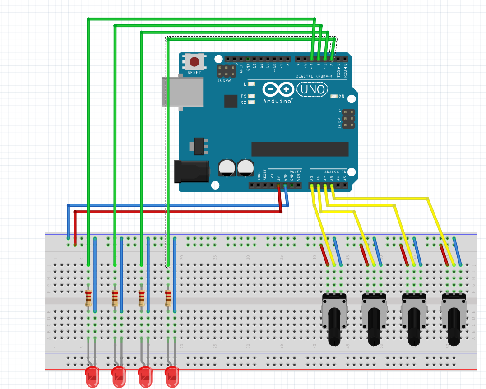

Puzzle: Potentiometer
Electric scheme

Explanation
Deze puzzel werd gemaakt door Jakob.
Nadat de doos is open geschoven is de eerste puzzel opgelost, namelijk de QR-code puzzel.
Vervolgens is het de bedoeling dat er goed geluisterd wordt naar het audio fragment. Hierin wordt vermeld dat het vliegtuig zich op een hoogte van "8734 FEET" bevindt.
Dit moet juist gedraaid worden met de potentiometers aan het bovenste gedeelte van de binnenkant van de kist.
Vervolgens zal een nieuw geluidje afspelen en moet de volgende puzzel opgelost worden: namelijk de Nokia puzzel.